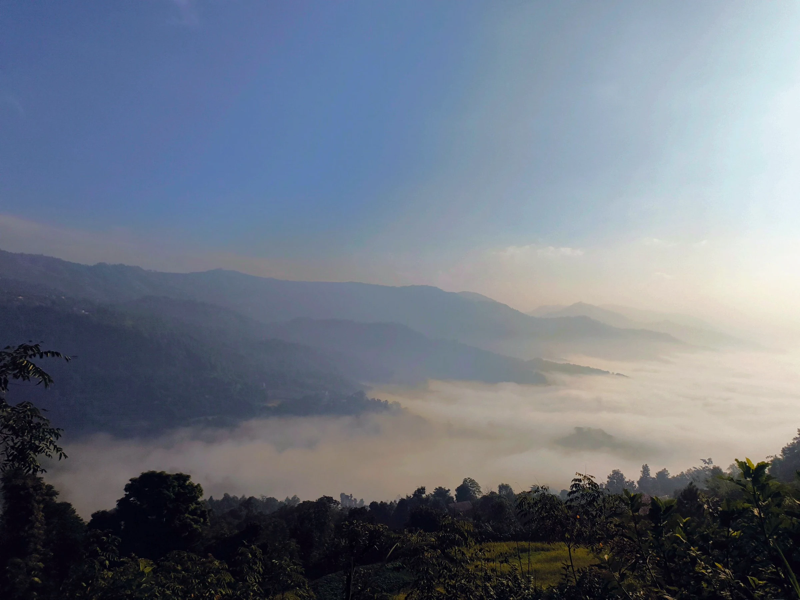

A PHOTOGRAPHIC JOURNAL
The POV of Chotu.
Everyday places. Changing light. Human stories.
A WAY OF LOOKING
Not every story asks for attention. Some are waiting in a shaft of light, a quiet street, or a distant line of hills. This is a place to notice them.
01 / SELECTED WORK
Collections.
A few places, each with its own rhythm, details and atmosphere.
02 / THE FULL ARCHIVE
All photographs.
30 photographs
Choose a collection or open a frame.
No photographs in this collection yet.
03 / A LITTLE ABOUT ME
Learning to
look closer.
Hey, I’m Vishal, also known as Chotu. I like noticing the little things that make a place feel alive: first light on a hillside, an old doorway, or a street finding its rhythm after dark.
I started Chotu Frame Journal to hold on to those moments and share a reminder that beauty often shows up when we slow down enough to notice. These photographs are my way of looking at the places I pass through in India and Nepal.
I’m glad you’re here. Take your time, and look a little closer.
04 / GET IN TOUCH
Let’s start
a conversation.
For print enquiries, collaborations or simply to say hello, get in touch.